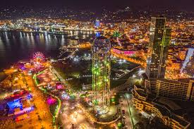

ყაზბეგი

ყაზბეგის მუნიციპალიტეტი — ადმინისტრაციულ-ტერიტორიული ერთეული აღმოსავლეთ საქართველოში, მცხეთა-მთიანეთის მხარეში. ადმინისტრაციული ცენტრია დაბა სტეფანწმინდა. ყაზბეგის მუნიციპალიტეტი უმთავრესად მოიცავს ისტორიულ-გეოგრაფიული მხარე ხევის ტერიტორიას.
ღირსშესანიშნაობანი
სოფელ სიონში დგას IX-X სს. ქართული ხუროთმოძღვრული ძეგლი - სამნავიანი ბაზილიკა, ე.წ. ხევის სიონი.
სოფელ გარბანის ზემოთ აღმართულია - გარბანის ეკლესია, რომელიც მიეკუთვნება IX-X სს. მიჯნას.
მნიშვნელოვანია ასევე გერგეტის სამება. ტაძარი ნაგებია კარგად გათლილი ანდეზიტის კვადრებით. გერგეტის სამება ხევის უმთავრესი სამლოცავი იყო.
მდინარე სნოსწყლის ნაპირზე განცალკევებით მდგარ კლდოვან გორაკზე აღმართულია სნოს ციხე. მნიშვნელოვანია აგრეთვე არშისა და დარიალის ციხესიმაგრეები.
არშის ციხე აღმართულია ციცაბი კლდეზე. ციხის შიგნით რამდენიმე ათასი კაცი დაეტეოდა, რაც გამოდგებოდა მტრის შემოსევის დროს ხევის მოსახლეობის დიდი ნაწილის შესახიზნათ. ქართველი მეცნიერის ვახუშტის მიხედვით, არშის ციხე შექმნილია ადამიანის ხელის გარეშე და კაცთაგან შეუვალია.
მნიშვნელოვანია ასევე ბეთლემის გამოქვაბული, რომელიც მდებარეობს მყინვარწვერის მასივზე, დაახლ. 4100 მ-ზე. ბეთლემის გამოქვაბული გამოკვლეულ იქნა 1948 წელს ქართველი მთამსვლელის ალექსანდრა ჯაფარიძის (1895-1974) მიერ.
სვანეთი
სვანეთი საქართველოს ყველაზე მაღალმთიანი ისტორიულ-გეოგრაფიული მხარეა და იგი დასავლეთ საქართველოს ჩრდილოეთ ნაწილში მდებარეობს. სვანეთი მკვეთრად გამოხატული ინდივიდუალიზმით გამოირჩევა. მწვერვალები, ქარაფები, ციხე-კოშკები, რომლებიც თავისუფლებისა და ძლიერი სულის სიმბოლო გამხდარა, დიდი ხანია მოგზაურების, დამსვენებლებისა თუ სამთო სპორტის მოყვარულების ყურადღებას იპყრობს. ეს უძველესი კულტურის მქონე მხარე ძალიან საინტერესოა მრავალრიცხოვანი კულტურის ძეგლებით, სახასიათო ფრესკული ნიმუშებით, წეს-ჩვეულებებითა და მრავალფეროვანი, შთამბეჭდავი ბუნებით.
უშგული – ევროპაში ყველაზე მაღალი სოფელი, რომელიც ზღვის დონიდან 2200 მეტრზე მდებარეობს. უშგული იუნესკოს მსოფლიო მემკვიდრეობის სიაშია და ცნობილია თავისი შუასაუკუნეების კოშკებით და ულამაზესი ხედებით შხარას მყინვარებზე.
მესტია – სვანეთის კულტურული ცენტრი, სადაც შეგიძლიათ იხილოთ სვანური კოშკები და ისტორიული სახლ-მუზეუმები. მესტიაში მდებარეობს სვანეთის ისტორიისა და ეთნოგრაფიის მუზეუმი, რომელიც სვანური ტრადიციების, რელიგიისა და ხელოვნების უნიკალურ ნიმუშებს ინახავს.
ლამარია – XII საუკუნის წმინდა მარიამის სახელობის ეკლესია უშგულში, რომელიც სვანეთის ერთ-ერთი უძველესი რელიგიური ნაგებობაა. აქ დაცულია უნიკალური ფრესკები და საკულტო ხელოვნების ნიმუშები.
შხარა და მყინვარწვერი – სვანეთის სიმბოლოები და საქართველოს ყველაზე მაღალი მწვერვალები, რომელთა ძირში შეგიძლიათ მოწყალოებებით დატკბეთ. შხარა უშგულიდან ახლოსაა და საკმაოდ შთამბეჭდავი ხედი იშლება მყინვარებისკენ.
ტეტნულდი – სათხილამურო და ალპინისტური სპორტის ცენტრი, რომელიც გამოირჩევა თავისი ფართო სათხილამურო ბილიკებითა და ულამაზესი მთის ხედებით. ტეტნულდი ზამთარში განსაკუთრებით პოპულარულია მოთხილამურეებისთვის.
ჭალაადი მყინვარი – მესტიის ახლოს მდებარე მყინვარი, რომელიც სილამაზით გამოირჩევა. მყინვარამდე ლამაზი ტურისტული მარშრუტი მიიყვანს სტუმრებს, რომელიც კავკასიონის მთებსა და ხეობაში გაივლის.
ჰაწვალი – კიდევ ერთი სათხილამურო კურორტი მესტიის სიახლოვეს, რომელიც ზამთარში სრიალისთვის იდეალურია, ხოლო ზაფხულში ლამაზი პანორამული ხედების მოყვარულებს იზიდავს.
სვანური კოშკები – სვანეთის გამორჩეული არქიტექტურული მემკვიდრეობა, რომელიც თარიღდება IX-XII საუკუნეებით. კოშკები თავდაცვის მიზნით აშენებული იყო და დღეს ტურისტებისთვის სვანეთის სიმბოლოდ ითვლება.
ბათუმი

ბათუმი — ქალაქი და მუნიციპალიტეტი[5] საქართველოში, არის აჭარის ავტონომიური რესპუბლიკის ადმინისტრაციული ცენტრი. ბათუმი არის მოსახლეობის რაოდენობით მეორე ქალაქი საქართველოში, მსხვილი საერთაშორისო ნავსადგური შავი ზღვის სამხრეთ-აღმოსავლეთ სანაპიროზე, მნიშვნელოვანი სამრეწველო, კულტურული და ტურისტული ცენტრი საქართველოში. ბათუმი გაშენებულია ღრმა, კარგად დაცული ბუნებრივი ნავსაყუდელის ბათუმის ყურის ნაპირას, ზღვის დონიდან 3 მეტრზე, თბილისიდან 350 კმ-ში (რკინიგზით). 2014 წლის აღწერის მონაცემებით, ქალაქში ცხოვრობს 152 839 ადამიანი.
ღირსშესანიშნაობანი ბათუმის ბოტანიკური ბაღი – ულამაზესი ბაღი, სადაც მსოფლიოს სხვადასხვა კუთხის მცენარეებს შეხვდებით. აქ შეგიძლიათ გაისეირნოთ სხვადასხვა კლიმატური ზონის განყოფილებებში და დატკბეთ ზღვის ხედებით.
ბათუმის ბულვარი – 7 კილომეტრიანი სანაპირო ზოლია, სადაც დასასვენებელი და გასართობი სივრცეებია განლაგებული. ბულვარში ნახავთ სკვერებს, შადრევნებს, ქანდაკებებსა და კაფეებს, ასევე "ალფრესკო" კინოთეატრსაც.
ანბანის კოშკი – უნიკალური არქიტექტურული ნაგებობა, რომელიც ქართული ანბანის ასოებს ასახავს. ეს თანამედროვე მონუმენტი 130 მეტრის სიმაღლეზე მდებარეობს და იქიდან ბათუმის ულამაზესი ხედი იშლება.
ევროპის მოედანი – ბათუმის ცენტრში მდებარე მოედანი, რომელიც ევროპული არქიტექტურისა და თანამედროვე სკულპტურების სინთეზს წარმოადგენს. აქვე დგას „მედეას მონუმენტი“ – ძველი ქართული მითოლოგიური ფიგურა.
პიაცა – იტალიურ სტილში აწყობილი მყუდრო მოედანი, რომელიც ევროპულ მრტანცულად ულამაზესი ფასადებით, რესტორნებითა და კაფეებითაა ცნობილი. აქ ხშირად იმართება კონცერტები და სხვა ღონისძიებები.
ჩაქვის ციხე – უძველესი ისტორიული ციხე, რომელიც ბათუმიდან რამდენიმე კილომეტრში მდებარეობს. ჩაქვის ციხე აჭარის რეგიონის მდიდარი ისტორიის ერთ-ერთი მემკვიდრეობაა.
დელფინარიუმი – ბათუმის დელფინარიუმი კავკასიის ერთ-ერთი პირველი დელფინარიუმია, სადაც შეგიძლიათ იხილოთ დელფინების შოუები და, სურვილის შემთხვევაში, მათთან ერთად იცურავოთ.
შერიფ ხიმშიაშვილის სახელობის მეჩეთი – ბათუმის მეჩეთი გამორჩეულია თავისი არქიტექტურით და კულტურული მნიშვნელობით. ის ადგილობრივი მუსლიმებისთვის სასულიერო მნიშვნელობას წარმოადგენს..
კახეთი
კახეთი — ისტორიულ-გეოგრაფიული რეგიონი აღმოსავლეთ საქართველოში. კახეთი ერთ-ერთი დიდი რეგიონია საქართველოს ფარგლებში. კახეთი ცნობილია კულტურულ ძეგლთა სიმრავლით. არაერთი ეკლესია-მონასტერი თუ ციხესიმაგრე იპყრობს ტურისტებისა და ექსკურსანტების ყურადღებას. კახეთის გამორჩეულად ცნობილი კულტურული ძეგლებია: ნინოწმინდა, ბოდბე, ხორნაბუჯი, უჯარმა, სიღნაღი, გურჯაანის ყველაწმინდა, ალავერდი, ახალი და ძველი შუამთა, იყალთო, გრემი, ნეკრესი. თითოეული ეკლესია-მონასტერი ძველი ტრადიციის მატარებელია, დღემდე მოქმედებს მათი სახელობითი დღესასწაულები. ეს კი საუკეთესო ფაქტორია მომლოცველთა ან უბრალოდ კულტურული ტურიზმით დაინტერესებულთათვის. მხარეს დიდი პოტენციალი აქვს ღვინის ტურიზმის განვითარებისთვის. კახეთის მეღვინეობის ისტორია ჩვ. წ. აღ-მდე III–II საუკუნეში იწყება და დღემდე მხარის ეკონომიკის უმნიშვნელოვანეს დარგს წარმოადგენს.
კახეთი საქართველოს ერთ-ერთი უმნიშვნელოვანესი ისტორიულ-კულტურული რეგიონია, სადაც უამრავი ლამაზი და საინტერესო ადგილი მდებარეობს. აი, რამდენიმე მათგანი:
ალავერდის მონასტერი – XII საუკუნის ძეგლი, რომელიც ცნობილია თავისი ულამაზესი არქიტექტურითა და ისტორიული მნიშვნელობით. იგი ერთ-ერთი უძველესი მონასტერია და აქ მარნიც ფუნქციონირებს.
სიღნაღი – სიყვარულის ქალაქად ცნობილი პატარა და რომანტიკული ადგილი, სადაც შუასაუკუნეების ციხე-გალავანი და პატარა, მყუდრო ქუჩები შეგიძლიათ ნახოთ. სიღნაღიდან ულამაზესი ხედი იშლება ალაზნის ველზე და კავკასიონის მთებზე.
დავით გარეჯის სამონასტრო კომპლექსი – VI საუკუნის კლდეში ნაკვეთი მონასტერი, რომელიც მდებარეობს კახეთის საზღვარზე და ცნობილია თავისი უნიკალური ფრესკებითა და სულიერი მნიშვნელობით.
ბოდბეს მონასტერი – წმინდა ნინოს საფლავი მდებარეობს აქ, რაც ამ ადგილს ქართველებისათვის წმინდა ადგილად აქცევს. მონასტერი ულამაზესი ბაღით არის გარშემორტყმული და აქედან ლამაზი ხედი იშლება.
ვაშლოვანის ნაკრძალი – კახეთის ბუნების ნამდვილი მარგალიტი, სადაც შეხვდებით უნიკალურ ფლორასა და ფაუნას, მთებს, მდინარეებს და უდაბნოებსაც კი.
კახეთის ღვინის მარანი – კახეთი არის ქართული ღვინის სამშობლო, სადაც მრავალი მარანია განთავსებული. შეგიძლიათ ეწვიოთ მათ, დააგემოვნოთ უნიკალური ღვინოები და გაეცნოთ ღვინის ტრადიციებს.
გრემი – XVI საუკუნის ციხე-ქალაქი და მეფის რეზიდენცია. გრემის კომპლექსში შედის ეკლესია და კოშკი, რომელთაგან გადაჰყურებს ალაზნის ველს.
ნეკრესი – ერთ-ერთი უძველესი და მდიდარი ისტორიული მნიშვნელობის ადგილი, რომელიც მთაში მდებარეობს. აქ იხილავთ ბაზილიკას, რომელიც IV საუკუნეშია აგებული.
ციხე-დედოფლის ციხე – განთქმული შუასაუკუნეების ციხე, რომელსაც მნიშვნელოვანი როლი ჰქონდა კახეთის თავდაცვის საქმეში.
რაჭა
რაჭა არის ისტორიული რეგიონი საქართველოს დასავლეთ ნაწილში, რომელიც მოიცავს რაჭის, ლეჩხუმის და ქვემო სვანეთის ტერიტორიებს. იგი მდებარეობს რიონის ხეობის ზემოთ, კავკასიონის მთებს შორის, და წარმოადგენს ერთ-ერთ ყველაზე მაღალმთიან რეგიონს საქართველოში. რაჭის ადმინისტრაციული ცენტრი ამბროლაურია, და ამ რეგიონში ყველაზე მნიშვნელოვანი ქალაქი ონი. რაჭა ცნობილია თავისი ბუნებრივი სილამაზით, გამორჩეული კულინარიით, ასევე ისტორიული ძეგლებით, როგორიცაა ნიკორტსმინდას და ბარაკონის ეკლესიები. რეგიონის ისტორია დრომდე გრძელდება მმართველთა დინასტიების პერიოდით, რომელიც გაერთიანებული საქართველოს სამეფოს შემადგენლობაში ყოფილა.
მუხუდრის ეკლესია – XII საუკუნის ტაძარი, რომელიც ერთ-ერთი ყველაზე მნიშვნელოვანი რელიგიური ძეგლია რეგიონში. იგი ძალიან მაღალი მთის მწვერვალზეა განთავსებული და შესანიშნავი პანორამული ხედი იშლება აქედან.
ნინოწმინდის ტაძარი – რაჭის ერთ-ერთი უძველესი ეკლესია, რომელიც X-XI საუკუნეებშია აგებული და ცნობილია თავისი ფრესკებით და არქიტექტურით. ტაძარი მდებარეობს მდინარე რიონზე და გამოირჩევა განსაკუთრებული სულიერი და კულტურული მნიშვნელობით.
რაჭის ღვინის მარანი – რაჭა ქართული ღვინის წარმოების ერთ-ერთი უძველესი რეგიონია. აქ მზადდება განსაკუთრებული ტიპის ღვინოები, განსაკუთრებით შიდა ყურძნის ჯიშები, რომლებიც ადგილობრივ კულტურაში მნიშვნელოვან როლს ასრულებენ. რაჭის ღვინის დეგუსტაციები და ტურები პოპულარულია ტურისტებში.
შოვი და შოვის კურორტი – შოვი არის პატარა და მოხერხებული დასახლება, რომელიც ცნობილია თავისი თბილი წყაროებით და მთის კურორტით. ზამთარში ის ერთ-ერთი საუკეთესო ადგილია თხილამურებისთვის, ხოლო ზაფხულში მიმზიდველი გახდება მწვანე მთების და ლამაზი მდინარეების თვალსაზრისით.
დავით გარეჯის მონასტერი – ერთ-ერთი უმნიშვნელოვანესი მონასტერი, რომელიც XI საუკუნეშია დაარსებული. იგი მდებარეობს ტყის გარემოში და სვანეთის წმინდა ადგილად ითვლება.
მთის სოფლები – რაჭის რეგიონი ცნობილია თავისი უნიკალური მთის სოფლებით, რომელთა ნაგებობები თავისებური არქიტექტურით გამოირჩევა. ამ სოფლებში თითქმის არ არსებობს თანამედროვე ინფრასტრუქტურა, რაც მათ სილამაზეს და ერთგვარ სიმწიფეს კიდევ უფრო უხდიდა.
მცხერის ციხე – XVI-XVII საუკუნეების ციხე, რომელიც დიდი მნიშვნელობა ჰქონდა რაჭის თავდაცვაში. დღესდღეობით ციხის ნანგრევები შეგიძლიათ მოინახულოთ.
ქვემო რაჭის ტბები – ამ რეგიონში მრავალი ტბა და ბუნებრივი წყარო არსებობს, რომლებიც განსაკუთრებულად მიმზიდველია ბუნების მოყვარულთათვის.
ერობეს სახლი – ეს ისტორიული შენობა, რომელიც X საუკუნიდან აქვს თავისი სახელი, ერთ-ერთი ყველაზე მნიშვნელოვანი ძეგლია რაჭაში, და მისი ინტერიერი მოიცავს უნიკალურ არქიტექტურულ ნიმუშებს.
სამეგრელო
სამეგრელო-ზემო სვანეთი (სამეგრელო-ზემო სვანეთის მხარე) მდებარეობს დასავლეთ საქართველოში და აერთიანებს სამეგრელოსა და ზემო სვანეთის ისტორიულ პროვინციებს. მას თავისი ცენტრალური ქალაქი, ზუგდიდი აქვს, და იგი ერთ-ერთ მთავარ ადმინისტრაციულ ერთეულს წარმოადგენს. რეგიონი შირმა მთებითა და კოლხეთის დაბლობითაა გამორჩეული, რაც განსაკუთრებით მიმზიდველს ხდის ტურიზმისთვის.
ღირსშესანიშნაობები ზუგდიდი – რეგიონული დედაქალაქი, სადაც მდებარეობს მდიდარი კულტურული მემკვიდრეობა, მათ შორის XIX საუკუნის ერმიტაჟი.
მარტვილი – ლეგენდარული მარტვილის კანიონი და მარტვილის მონასტერი, რომლებიც შესანიშნავი ტურისტული ღირსშესანიშნაობებია.
მესტია – ზემო სვანეთის ცენტრი, რომელსაც კავკასიონის მთებში განლაგება აძლევს განსაკუთრებულ მიმზიდველობას. აქ მდებარეობს უძველესი სვანური სოფლები, კოშკები და ეკლესიები.
პოტი – ცალკე ქალაქი, რომელიც მსოფლიო უძრავი კულტურული მემკვიდრეობის სიაშია შესული, თავისი მუზეუმებითა და ზღვის ნაპირით
იმერეთი
იმერეთი არის საქართველოს ისტორიული რეგიონი, რომელიც მდებარეობს ქვეყნის დასავლეთ ნაწილში, რიონის შუა და მაღალ ზონებში. იგი ერთ-ერთი ყველაზე დასახლებული რეგიონია საქართველოში და მოიცავს 11 მუნიციპალიტეტს, მათ შორისაა ქუთაისი, რომელიც რეგიონული დედაქალაქია. იმერეთი ცნობილია მდიდარი ისტორიული და კულტურული მემკვიდრეობით. აქ მდებარეობს გელათის მონასტერი და ბაგრატის ტაძარი, რომლებიც UNESCO-ს მსოფლიო მემკვიდრეობის სიაშია შეტანილი. რეგიონი ასევე გამოირჩევა მდიდარი ბუნებით, სოფლის მეურნეობით და ინდუსტრიული განვითარებით, მათ შორის, მოლიპნისა და ქვანახშირის მოპოვება.
გელათის მონასტერი – ეს მონასტერი მე-12 საუკუნით თარიღდება და ერთ-ერთი ყველაზე მნიშვნელოვანი კულტურული ძეგლია საქართველოში. იგი განთქმულია თავისი არქიტექტურით და ფრესკებით, ასევე, აქ არის დასაფლავებული საქართველოს დიდმთავარი დავით აღმაშენებელი. გელათი UNESCO-ს მსოფლიო მემკვიდრეობის სიაშია შეტანილი.
ბაგრატის ტაძარი – ქუთაისში მდებარე ამ ტაძარს აქვს დიდი ისტორიული მნიშვნელობა. ის საქართველოში ქრისტიანობის გავრცელების ერთ-ერთ მთავარ სიმბოლოდ ითვლება და ასევე UNESCO-ს მსოფლიო მემკვიდრეობის სიაშია შეტანილი.
პრომეთეს მღვიმის სისტემა – ეს მღვიმე მდებარეობს ჯუმათში და გთავაზობთ უნიკალურ ლანდშაფტებს და სიჩუმეს. გატესტილია ტურისტებისთვის, სადაც შესანიშნავი სტალაქტიტები და სტალაგმიტები შეგიძლიათ ნახოთ.
ტვიშის ეკლესია – ერთ-ერთი ყველაზე მნიშვნელოვან და კარგად შემორჩენილი ძეგლი, რომელიც ასევე არაერთი ტურისტის ყურადღებას იპყრობს.
წილკანის ციხე – ეს ციხე მდებარეობს ქუთაისიდან დასავლეთით და ითვლება ერთ-ერთ მნიშვნელოვან ადგილად იმერეთის ისტორიის შესწავლისას.
გურია
გურია დასავლეთ საქართველოს ისტორიულ-გეოგრაფიული მხარეა, რომელიც უნიკალურ ბუნებასა და მრავალფეროვან ისტორიას აერთიანებს. მისი ტერიტორია მოიცავს ზღვისპირა, მდინარეებითა და ალპური მდელოებით მდიდარ ზონებს, რაც რეგიონს განსაკუთრებულად მიმზიდველს ხდის სხვადასხვა ტიპის მოგზაურებისთვის. გურია პირველად VIII საუკუნეში ისტორიულ წყაროებში იხსენიება, ხოლო კოლხას სამეფოს არსებობისას (ძვ. წ. II ათასწლეული) ის ეგრისის სამეფოს შემადგენელი ნაწილი იყო. მოგვიანებით, აქ ჩამოყალიბდა გურიის სამთავრო, რომელიც ფეოდალურ ხანაში დამოუკიდებელ რეგიონად ჩამოყალიბდა. გურიის ტერიტორია მოიცავს ოზურგეთს, ლანჩხუთსა და ჩოხატაურს. რეგიონში მდებარეობს ღირსშესანიშნაობები, მათ შორის ურეკი და გომისმთა, რომლებიც ცნობილი ზღვის სანაპიროებითა და ბუნებრივი მინერალური წყლებით გამოირჩევა. აქვეა შემოქმედის მონასტერი, რომელიც მნიშვნელოვანია რეგიონში ქრისტიანული კულტურისა და ტრადიციების შესანარჩუნებლად
გომისმთა – ზღვის დონიდან 2000 მეტრზე მდებარე ულამაზესი კურორტი, რომელიც ცნობილია თავისი ალპური ხედებით და ე.წ. "მზის ამოსვლის ქალაქით". ეს ადგილია შესანიშნავი საცხოვრებელი დასასვენებლად და განსაკუთრებულად პოპულარულია ზაფხულში.
ურეკი – შავი ზღვის სანაპიროზე მდებარე კურორტი, რომელიც ცნობილია თავისი მაგნიტური ქვიშებით, რომლებსაც სამკურნალო თვისებები მიეწერება. აქ ისვენებენ სხვადასხვა ასაკის ადამიანები და განსაკუთრებით განკუთვნილია ჯანმრთელობის აღდგენის მსურველებისთვის.
შემოქმედის მონასტერი – XII საუკუნის ეს მონასტერი გამორჩეულია თავისი არქიტექტურით და განსაკუთრებულ როლს ასრულებს გურიის სასულიერო და კულტურულ ისტორიაში. მონასტერი მდებარეობს ოზურგეთთან ახლოს და მოიცავს უნიკალურ ფრესკებსა და ხუროთმოძღვრულ ნიმუშებს.
ჯუმათის მონასტერი – ერთ-ერთი უძველესი მონასტერი, რომელიც ასევე XII საუკუნეში აშენდა და დიდ მნიშვნელობას წარმოადგენს გურიის ისტორიისთვის. აქ შეგიძლიათ იხილოთ შუასაუკუნეების ქართული ხელოვნების ნიმუშები.
ბახმარო – მაღალმთიანი კურორტი გურიაში, რომელიც განსაკუთრებით პოპულარულია სუფთა ჰაერით და ეკოლოგიური დასასვენებელი გარემოთი. ბახმარო ზაფხულის სეზონზე ბევრი სტუმრის მიმღებია.